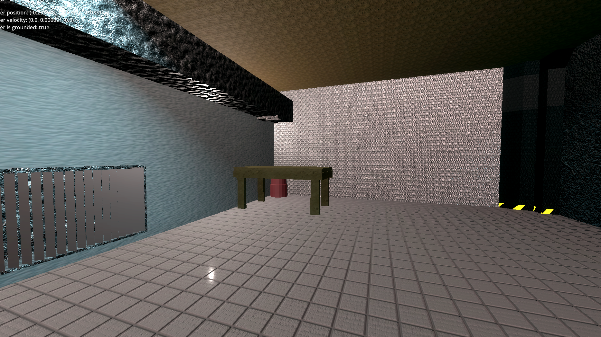
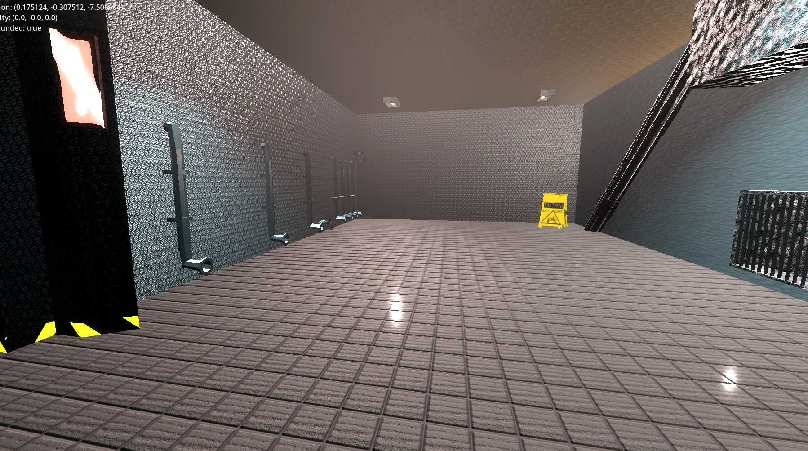
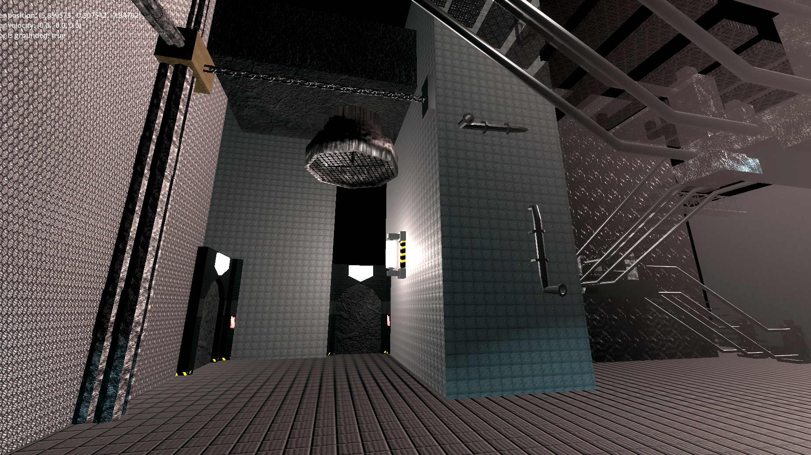
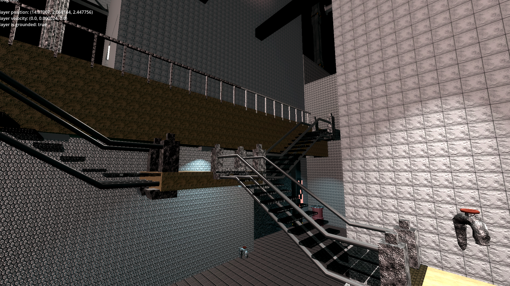
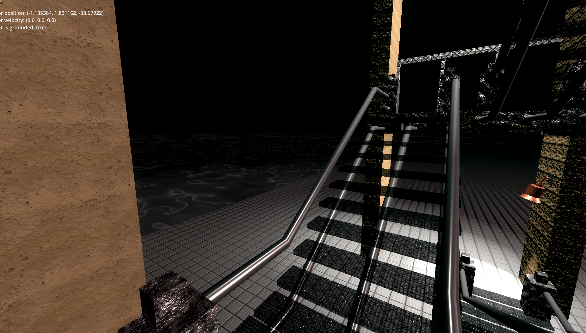

This is a collection of screenshots from a game I made awhile ago. Putting them in a group of sldies you can click through helps show off how their all part of the same collection.
This was an old one. This was one of the first (and last) times I have attempted sculpting semi-successfully. Sculpting is a different way of making 3d moddels that has more to do with stretching and pulling many small coordinates at a time relative to the camera and mouse. It's not a process that I'm a fan of, so I always worked with my meshes using a different overall aproache thats more geometry and cooriate based. Still I think this one turned out ok.
Often when working with animations where characters move around and do stuff, animators will ussaly go around moveing the WHOLE character in t-pose to where they need to be for each keyframe before they start to make the arms, legs, and other joints bend around in a belivable way. Sadly this one never got past that point.